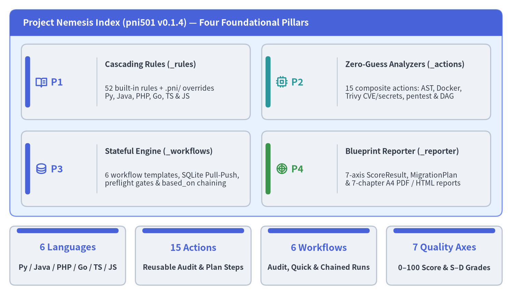
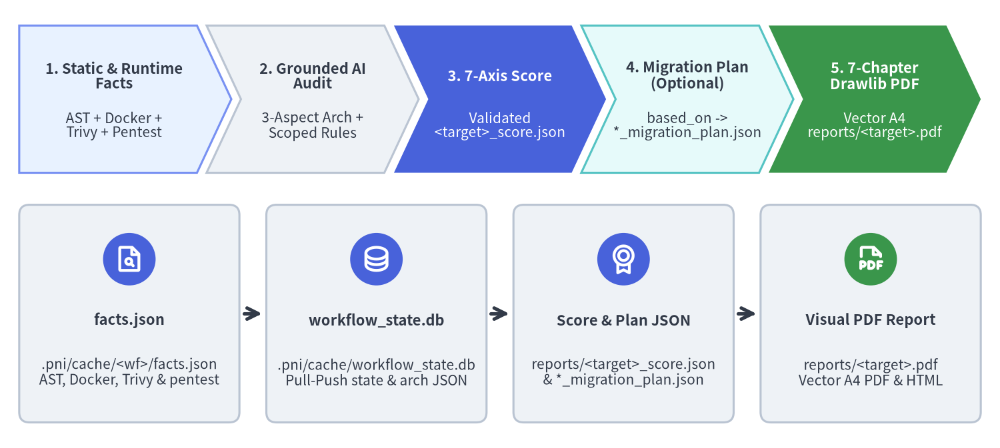

pni501 (Project Nemesis Index) — 公式ドキュメント
Project Nemesis Index (pni501 v0.1.4) は、Python、Java、PHP、Go、TypeScript、JavaScript の6言語リポジトリに対応する AI ネイティブなソフトウェア健全性監査・ペネトレーションテスト・マイグレーション計画フレームワークです。決定論的な静的解析・隔離コンテナ実行ツールと、SQLite ベースのステートフル Pull-Push ワークフローエンジン、そして Drawlib ビジュアルレポート生成基盤を統合することで、LLM 特有の数値・パスハルシネーションを排除し、再現性のある7軸品質スコア・トポロジカル移行計画・出版品質の A4 ベクター PDF レポートを出力します。

Source Code
from drawlib.canvas import save, setup
from drawlib.icons import phosphor
from drawlib.smartarts import KpiCards, Panel
from drawlib.styles import Styles
setup(width=156, height=90, dpi=150)
outer = Panel(
"Project Nemesis Index (pni501 v0.1.4) — Four Foundational Pillars",
header_variant="filled",
style=Styles.PrimaryNeutral.patch(shape_r=2.0),
header_style=Styles.PrimaryFlat,
text_style=Styles.WhiteBold.patch(text_size=12.5),
)
outer.draw(xy=(3.0, 24.0), width=150.0, height=63.0)
cards = KpiCards(
style=Styles.Neutral.patch(shape_r=1.8),
metric_style=Styles.PrimaryBold.patch(text_size=13.5),
text_style=Styles.DarkBold.patch(text_size=10.8),
description_style=Styles.Dark.patch(text_size=10.0),
accent_position="left_pill",
accent_style=Styles.PrimaryFlat,
icon_style=Styles.PrimaryBold,
spacing=3.5,
)
cards.add(
"P1",
"Cascading Rules (_rules)",
"52 built-in rules + .pni/ overrides\nPy, Java, PHP, Go, TS & JS",
icon=phosphor.book_open_text,
)
cards.add(
"P2",
"Zero-Guess Analyzers (_actions)",
"15 composite actions: AST, Docker,\nTrivy CVE/secrets, pentest & DAG",
accent_style=Styles.SecondaryFlat,
metric_style=Styles.SecondaryBold.patch(text_size=13.5),
icon_style=Styles.SecondaryBold,
icon=phosphor.cpu,
)
cards.add(
"P3",
"Stateful Engine (_workflows)",
"6 workflow templates, SQLite Pull-Push,\npreflight gates & based_on chaining",
icon=phosphor.database,
)
cards.add(
"P4",
"Blueprint Reporter (_reporter)",
"7-axis ScoreResult, MigrationPlan\n& 7-chapter A4 PDF / HTML reports",
accent_style=Styles.SuccessFlat,
metric_style=Styles.SuccessBold.patch(text_size=13.5),
icon_style=Styles.SuccessBold,
icon=phosphor.chart_polar,
)
cards.draw(xy=(6.5, 27.0), width=143.0, height=49.5, columns=2)
kpis = KpiCards(
style=Styles.Neutral.patch(shape_r=1.6),
metric_style=Styles.PrimaryBold.patch(text_size=13.0),
text_style=Styles.DarkBold.patch(text_size=10.2),
accent_style=Styles.PrimaryFlat,
accent_position="top_bar",
metric_layout="top_stack",
spacing=3.0,
)
kpis.add("6 Languages", "Py / Java / PHP / Go / TS / JS")
kpis.add("15 Actions", "Reusable Audit & Plan Steps")
kpis.add("6 Workflows", "Audit, Quick & Chained Runs")
kpis.add("7 Quality Axes", "0–100 Score & S–D Grades")
kpis.draw(xy=(3.0, 3.0), width=150.0, height=18.0, columns=4)
save()
1. エグゼクティブ概要：決定論的解析 × AI 推論のハイブリッドエンジン
単発プロンプトによる LLM コードレビューには、非決定論的なカウント誤差、実在しないファイルパスの捏造、チェック項目の抜け漏れ、そしてコンテナ実行時の挙動・依存パッケージの既知 CVE・稼働 HTTP エンドポイントの脆弱性を一切検証できないという構造的限界があります。一方で、従来の静的リンターだけでは、ドメイン境界の凝集度や3視点のシステムアーキテクチャ、段階的モダナイゼーションのトレードオフを評価することはできません。
pni501 (v0.1.4) は、6言語（Python、Java、PHP、Go、TypeScript、JavaScript）にわたる 52個のカスケード規約ルール、15個のコンポジットアクション、6言語セットのステートフルワークフロー を単一のパイプラインに統合することで、この両者の強みを融合します：
- プログラムによるマルチモーダルな客観ファクト抽出：
pniはproject_inspect、ポリグロットast_analyze（Python 標準astおよび Java / PHP / Go / TypeScript / JavaScript 対応のast-grep-py）、隔離 Docker コンテナでのrun_check（オフライン単体テスト・カバレッジ計測・HTTP 起動確認）、ソケット非公開 Trivy によるsecurity_scan（CVE・IaC 設定不備・秘密情報漏洩）、ループバックコンテナに対するpytest+httpxの動的web_pentest、トポロジカル依存グラフ解析migration_analyze、および Git 進捗解析progress_analyzeを自動実行し、正確なテレメトリを.pni/cache/<workflow_id>/facts.jsonと.pni/cache/workflow_state.dbに永続化します。 - スキーマ検証付き AI 監査・連鎖プランニング・ビジュアルレポート生成：SQLite（
workflow_state.db）のステップ管理のもと、Code AI Agent はスコープ別ルールを読み込み（load_rules）、実在パス照合済みの3視点アーキテクチャを記録し（record_architecture->architecture.json）、規約準拠性を評価し（ai_interpret）、7軸のScoreResult（reports/<target>_score.json）を出力します。さらに必要に応じてbased_onによるマイグレーション計画（reports/<target>_migration_plan.json）や進捗評価（reports/<target>_progress.json）を連鎖実行し、Drawlib ビジュアルレポート（reports/<target>.pdfおよび HTML）をビルドします。

Source Code
from drawlib.canvas import save, setup
from drawlib.icons import phosphor
from drawlib.smartarts import CardList, ChevronProcess
from drawlib.styles import Styles
setup(width=156, height=70, dpi=150)
pipeline = ChevronProcess(
style=Styles.PrimaryNeutral,
text_style=Styles.DarkBold.patch(text_size=10.5),
description_style=Styles.Dark.patch(text_size=10.0),
corner_angle=65.0,
spacing=1.5,
flat_left_end=True,
)
pipeline.add(
"1. Static & Runtime\nFacts",
description="AST + Docker +\nTrivy + Pentest",
)
pipeline.add(
"2. Grounded AI\nAudit",
description="3-Aspect Arch +\nScoped Rules",
style=Styles.Neutral,
)
pipeline.add(
"3. 7-Axis Score",
description="Validated\n<target>_score.json",
style=Styles.PrimaryFlat,
text_style=Styles.WhiteBold.patch(text_size=10.5),
description_style=Styles.White.patch(text_size=10.0),
)
pipeline.add(
"4. Migration Plan\n(Optional)",
description="based_on ->\n*_migration_plan.json",
style=Styles.SecondaryNeutral,
)
pipeline.add(
"5. 7-Chapter\nDrawlib PDF",
description="Vector A4\nreports/<target>.pdf",
style=Styles.SuccessFlat,
text_style=Styles.WhiteBold.patch(text_size=10.5),
description_style=Styles.White.patch(text_size=10.0),
)
pipeline.draw(xy=(3.0, 43.0), width=150.0, height=23.0)
artifacts = CardList(
style=Styles.Neutral.patch(shape_r=1.6),
text_style=Styles.DarkBold.patch(text_size=10.5),
description_style=Styles.Dark.patch(text_size=10.0),
badge_shape="circle",
badge_style=Styles.PrimaryFlat,
badge_text_style=Styles.WhiteBold.patch(text_size=10.0),
icon_style=Styles.WhiteBold,
direction="horizontal",
show_arrows=True,
arrow_style=Styles.DarkBold,
spacing=3.0,
)
artifacts.add(
"facts.json",
".pni/cache/<wf>/facts.json\nAST, Docker, Trivy & pentest",
icon=phosphor.file_magnifying_glass,
)
artifacts.add(
"workflow_state.db",
".pni/cache/workflow_state.db\nPull-Push state & arch JSON",
icon=phosphor.database,
)
artifacts.add(
"Score & Plan JSON",
"reports/<target>_score.json\n& *_migration_plan.json",
icon=phosphor.medal,
)
artifacts.add(
"Visual PDF Report",
"reports/<target>.pdf\nVector A4 PDF & HTML",
badge_style=Styles.SuccessFlat,
icon=phosphor.file_pdf,
)
artifacts.draw(xy=(3.0, 4.0), width=150.0, height=34.0)
save()
2. 主要機能サマリー
| 機能領域 | 組み込みアセット (v0.1.4) |
主な成果物・品質保証 |
|---|---|---|
| 対応プログラミング言語 | 6言語: Python, Java, PHP, Go, TypeScript, JavaScript |
マニフェストおよびソースから自動判定 (detect_active_language) |
| カスケード設計規約ルール | 52個の標準ルール (common/ + 6言語スコープ) + .pni/rules/ 上書き |
OWASP ASVS, OpenSSF Scorecard, 12-Factor, SRE PRR, CLI・ライブラリ規約を適用 |
| コンポジットアクション | 言語スコープあたり 15個のコンポジットアクション（12+ プリミティブに展開） | 推測ゼロの決定論的アナライザと Pydantic スキーマ検証付き AI 推論を統合 |
| ステートフルワークフロー | 6言語ワークフローセット (full_audit, quick_check) + migration / progress |
Fail-Closed な Pre-Flight ゲートを備えた SQLite Pull-Push ステートマシン |
| 7軸品質スコアリング | architecture, code_quality, typing, testing, dependencies, security, documentation |
決定論的な 0–100 点スコア、S〜D グレード、P0〜P2 優先度付き改善項目 |
| Drawlib ビジュアルレポート | ブループリント駆動の7章構成 監査・移行 PDF + 5章構成 進捗 PDF | pni report build による高密度ベクターチャート (RadarChart, HeatmapChart, Roadmap) |
3. クイックインストールと初回監査の開始
pip または uv で pni501 をインストールし、対象リポジトリで .pni/ を初期化してステートフルワークフローを開始します：
# PyPI から pni501 をインストール
pip install pni501
# または uv を使用:
uv add pni501
# .pni/ 設定・ルール・アクション・ワークフローを初期化
pni init
pni workflows list
pni workflows show full_audit
# ステートフル Pull-Push ワークフローエンジンを開始
pni workflows start full_audit
4. ドキュメントロードマップ
セクション別に pni501 の全ドキュメントを参照できます：
4.1 はじめに (Getting Started)
- 背景とコアコンセプト — なぜ単発の AI プロンプト監査が実務リポジトリで破綻するのか、そして PNI の4つの柱がいかにハルシネーションゼロの診断を保証するかを解説します。
- クイックスタートガイド — インストール、
.pni/初期化、Pre-Flight 準備ゲート確認、get-action/push-actionループの実行手順をステップバイステップで説明します。 - 3つの主要ユースケース — スプリント開発での継続的品質測定、ブラックボックス化したレガシー資産の多角検査、
based_on連鎖によるマイグレーション計画を解説します。 - リリースノート — バージョン履歴 (
v0.1.0〜v0.1.4)、新規アナライザー機能、CLI の拡張内容をまとめています。
4.2 アーキテクチャ・ワークフロー・スコアリング・リファレンス
- ドメイン構造と3層カスケード および ステートフル Pull-Push エンジン — 内部パッケージ設計と SQLite 状態遷移の仕組み。
- ワークフローと Pre-Flight ゲート、15 アクションと 12 プリミティブ、決定論的解析器とペネトレーションテスト — YAML ワークフロー定義と決定論的アナライザの詳細。
- 7軸品質スコアリングモデル および Drawlib ビジュアルレポーター — 定量グレーディング数式と7章構成 PDF レポートブループリント。
- 対応 6 言語マトリクス および ルール拡張と CLI リファレンス — ポリグロット解析仕様と全 CLI コマンドリファレンス。